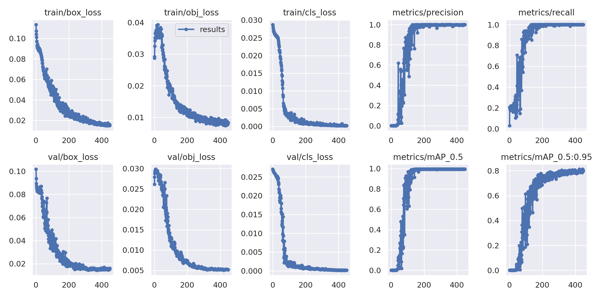

YOLOv5
Contents
YOLOv5¶
Our model runs object detection as an ensemble of two models: FasterRCNN and YOLOv5. FasterRCNN is covered in Chau’s tutorial. YOLOv5 will be covered here.
YOLOv5 is actually an independent Git repo, hosted on the Ultralytics Github.
Our version of the repo is located at:
/data/aneurysm/hakimi93/CamdenAneurysmProject/inference_package/yolo
Our version may be outdated compared to Ultralytics’ version, but the ensemble uses a customized version of the detection script, so updating might break it.
Data Format¶
The format of a YOLO dataset is quite different from FasterRCNN. You still have a folder with images, but instead of a single annotation file, YOLO demands a separate .txt file that corresponds to each image.
Furthermore, YOLO also requires a data.yaml file that will specify the paths to your training dataset and validation dataset.
Converting from COCO JSON to YOLO¶
The annotations we receive from Ron are in the COCO JSON format required for FasterRCNN. We can’t directly use these for YOLO, so we need to convert them.
I have already written a script for this, using a package called pylabel. The script is straightforward - all you need to change is the annotation path (where is the json file located) and the output path (where you want to put your data after converting it). NOTE: The output path must be an absolute path.
The script is located at:
/data/aneurysm/hakimi93/CamdenAneurysmProject/scripts/coco2yolo.py
Training and Testing¶
You shouldn’t be training on the entire dataset since you’ll get biased results if you test on data that you already trained on.
The ratio of training data to untouched testing data is called the train-test split. Our FasterRCNN uses a train-test split of 80-20, meaning that 80% of the data is used for training and we test on the remaining 20%.
In order to achieve similar results with YOLO, we have to actually move images (and their corresponding labels) out of the train directory and into a new test directory.
If you don’t have the repository in your own directory, you should copy it.
cp -r /data/aneurysm/hakimi93/CamdenAneurysmProject/inference_package/yolo_train
For this tutorial, we will be training on the merged dataset.
This dataset is located at /data/aneurysm/hakimi93/CamdenAneurysmProject/aortaDatasets/merged/yolo.
Training¶
Enter your version of the yolo repo. You might want to copy the dataset.yaml file
from the dataset to here, just for convenience’s sake. This can be done with this
command:
cp /data/aneurysm/hakimi93/CamdenAneurysmProject/aortaDatasets/merged/yolo/dataset.yaml .
From here, you can execute the training script. Be warned - it has a lot of command line arguments.
python train.py --data dataset.yaml --weights '' --cfg yolov5s.yaml --img 512 --epochs 450
Let’s break this down.
--data dataset.yaml - Train on images in the directory defined in the dataset.yaml file.
--weights '' --cfg yolov5s.yaml - Tells the script that you want to train from scratch.
--img 512 - The image input is 512x512 - we don’t want to change that.
--epochs 450 - Train for 450 epochs. (The default is 300)
There are a couple other options you might use.
--project is used when you want to save to a specific directory, and
--name is used if you want to give your run a specific name.
Further usage can be found here.
Testing¶
Testing is done from the same location as training, with the script detect.py.
If you didn’t change the project or name when you were testing, your command will
probably look like this:
python detect.py --source /data/aneurysm/hakimi93/CamdenAneurysmProject/aortaDatasets/merged/yolo/test/images --weights runs/train/exp/weights/best.pt --save-txt
--source Points the script at the directory with the images you want to test on.
--weights Gives the location of the .pt file (weights file) you want to use.
--save-txt tells the program to save your labels as txt files.
Again, there are some extra options that you might want to use.
--project and --name are the same as before.
--save-crop will save the crops of the image. In the main program, these will
be sent through U-Net.
--line-thickness changes how thick the bounding box lines are. The default is 3,
but I personally like 2.
--hide-labels and --hide-conf can be used if you just want to see the bounding
boxes on the image without the extra label and conf score information.
Further usage can be found here.
Metrics: How well did the model do?¶
You probably want to know how well your model did. YOLO automatically saves the results of its training process, so you just have to look.
The results for the training you did just now should be located (from the yolo_train
folder) in runs/train/exp/results.png. Simply transfer that to your local computer
and open it up in any image-viewing software. You should have something like this:

Let’s break it down.
Losses¶
For each loss (box, obj, cls) there are a train loss and a val loss. These help us to tell when our model is reaching its limits and overfitting. You basically want two things from the loss plots:
Each loss plot should trend towards 0 (or at least a very low number).
The shape of the training loss should not be very different from the shape of the validation loss. If they’re of different shapes, something’s gone wonky.
box_loss - A measure of how good the predicted bounding box is. A lower box
loss means the bounding box is more accurate.
obj_loss - A measure of how likely there is to be an object where the model
is predicting an object. A high object loss means the model is seeing things that
aren’t there or not seeing things that are there.
cls_loss - A measure of how likely it is that the model predicts a correct class.
In our case, the model only has to differentiate between ascending and descending aortas.
Other metrics¶
precision is the proportion of correct identifications to total identifications.
recall is the proportion of correct identifications to total number of objects.
If you have 100 real objects and predict 10, with all 10 being correct, your precision is high (because your identifications were all correct) but your recall is low (since you missed many real objects).
mAP, or mean average precision, is basically the “accuracy” of the model. A high
mAP means a very accurate model. The default YOLO results.png gives two plots of
mAP.
mAP_0.5 gives the accuracy if you consider boxes overlapping by at least 50% “correct”.
mAP_0.5:95 is the same, but with the benchmark being 95% instead. This is generally
what we want to see be as high as possible.
Detection Results¶
Remember how I had you use the --save-txt option when testing? Yeah, that’s for
this. As long as you have the original labels and the predicted labels, you can get the
IoU scores of the boxes fairly easily. The script is located at:
/data/aneurysm/hakimi93/CamdenAneurysmProject/scripts/get_iou_scores.py
Simply find the variable named predlist (at the very bottom) and change the
directory that leads to my labels to the directory that leads to your labels.
Then, run the script and you will get the average IoU scores for ascending, descending, and total.